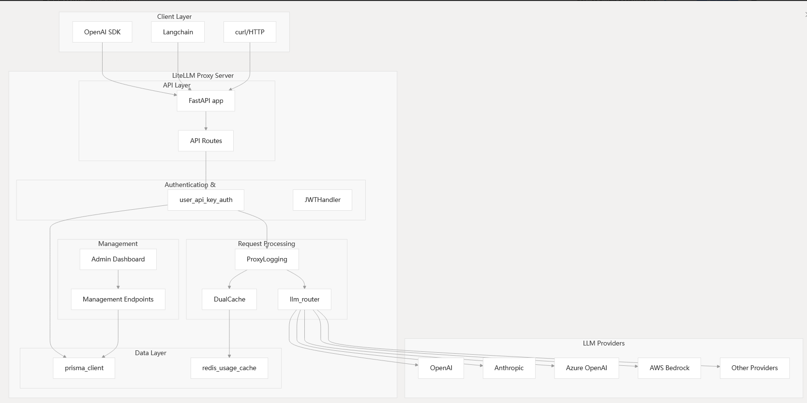
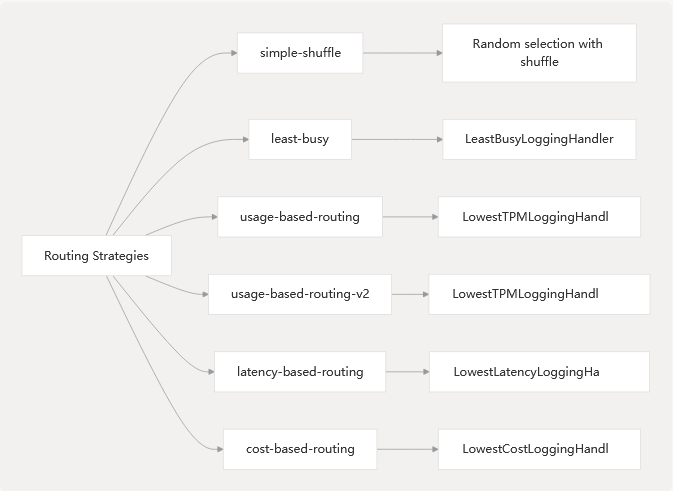

Arch[1] #

Routing and Load Balancing[2] #

参考 #
快速上手 LiteLLM：打造高效、稳定、面向生产的 LLM 应用程序
code #
- https://deepwiki.com/BerriAI/litellm/3-litellm-proxy
- https://deepwiki.com/BerriAI/litellm/3.4-routing-and-load-balancing
https://github.com/BerriAI/litellm
https://github.com/BerriAI/litellm/blob/c946ae85/litellm/router.py
https://github.com/BerriAI/litellm/blob/c946ae85/litellm/types/router.py
https://github.com/BerriAI/litellm/blob/c946ae85/litellm/proxy/proxy_server.py
doc #
https://docs.litellm.ai/docs/
https://docs.litellm.ai/docs/routing